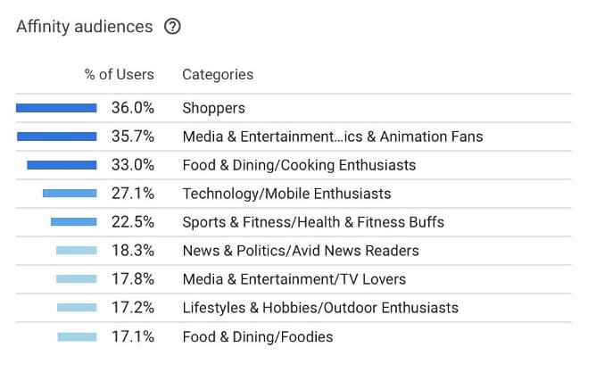
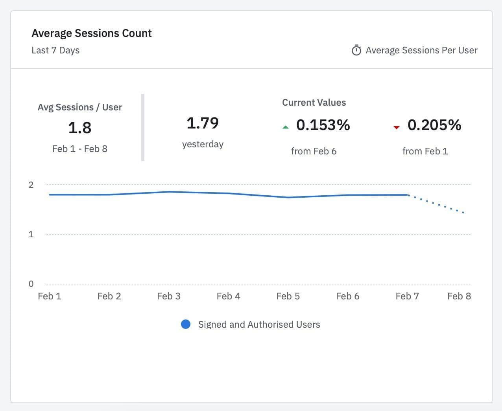
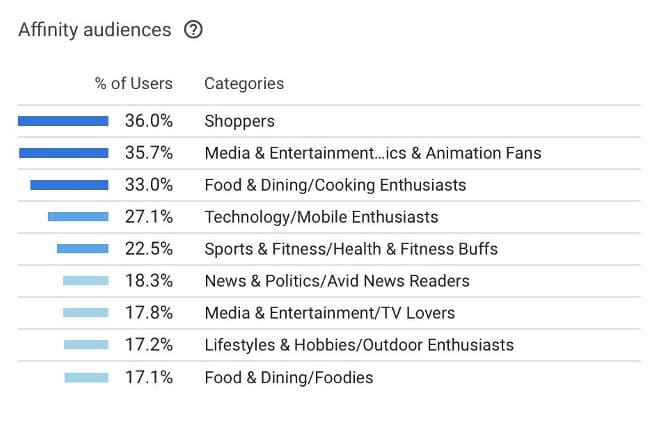
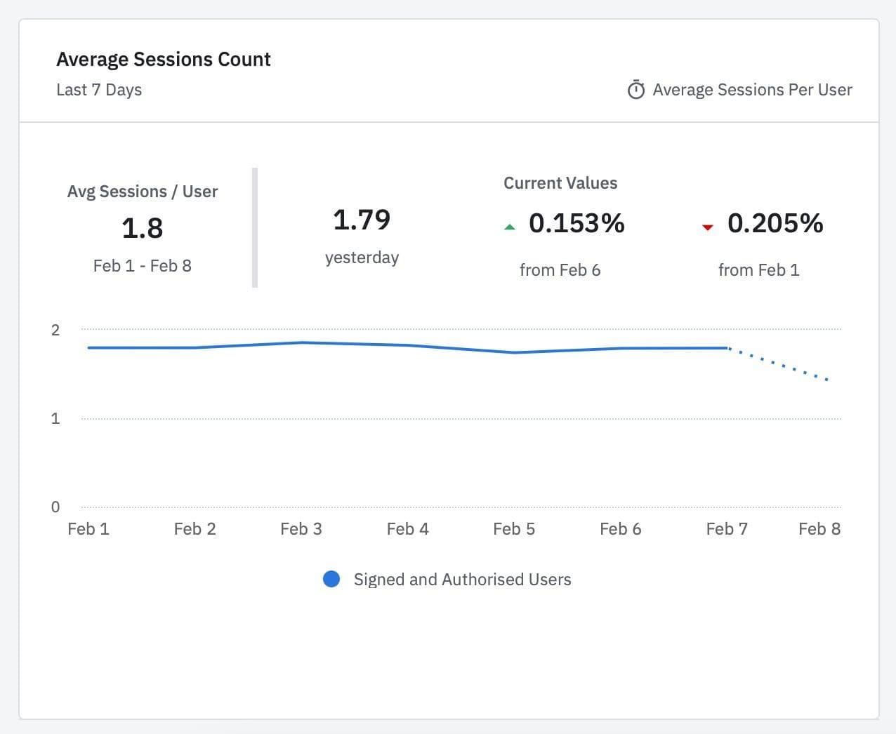

Как поможет РосДомофон?
Решайте задачи бизнеса с РосДомофон

Схема работы
в РосДомофон
и подключаете ваше
оборудование
маркетинговые материалы
и информируете жильцов
о новых сервисах

на подключение от жильцов
и активируете им новые
сервисы
ежемесячную дату
создания счета
и суммы на оплату
Результаты работы с нами
Если остались вопросы

Для подключения координатно-матричных (аналоговых) или цифровых домофонов мы разработали специальный адаптер RDA (РосДомофонАдаптер) позволяющий перехватить аналоговый сигнал от вызывной панели, преобразовать его в цифровой и отправить в Интернет. Существуют различные модели RDA, позволяющие подключить к сервису как отдельно стоящий, так и многоподъездный дом.
RDA ставится в разрыв между вызывной панелью и коммутатором, что позволяет отправлять вызов на и домофонную трубку, и в приложение на смартфоне пользователя. Также пользователь может открывать со смартфона все подключенные к RDA двери (шлагбаумы, ворота, калитки и т.д.).
Существует 3 типа подключений IP-панели к сервису РосДомофон:
1. Прямое подключение от IP-панели к нашему SIP-серверу, посредством публичного ip-адреса на панели. Далее производится настройка подключения в личном кабинете РосДомофона и затем полученные данные прописываются в настройках SIP на ip-панели.
2. Подключение посредством ATC на RDA. В этом случае не требуется наличие публичного ip-адреса. В роли промежуточного узла выступает RDA, который позволяет ретранслировать как SIP-звонки, так приватные видео-потоки. IP-панель и RDA должны находиться в общей локальной сети.
3. SIP-транк подключение посредством выделенного сервера. Это решение по своей логике аналогично предыдущему пункту с RDA, только вместо RDA разворачивается полноценный сервер с АТС на стороне партнера.
Да, можно. Наша система умеет транслировать видеопотоки как с IP-камер с помощью RTSP протокола, так и с аналоговых камер, работающих через видеорегистратор с возможностью ретрансляции через RTSP протокол. Настройка и привязка видеопотока к конкретному адресу осуществляется в личном кабинете партнера.
В случае, если в одной локальной сети с камерой имеется RDA, то возможна ретрансляция в облако РосДомофона до 6ти видео-потоков по локальному (серому) ip-адресу.
Необходимо разместить внешнюю камеру рядом с домофонной панелью так, чтобы она была направлена на лицо посетителя и избавлена от засветов, так чтобы пользователь всегда мог рассмотреть лицо посетителя в хорошем качестве
К РосДомофон можно подключить как ip-камеры посредствам RTSP протокола, так и аналоговые камеры, работающие через видеорегистратор с возможностью передачи видео через RTSP протокол. Настройка и привязка видеопотока к конкретному подъезду и домофону осуществляется в личном кабинете на платформе РосДомофон.
Наша внутренняя статистика показывает, что сервис РосДомофон востребован как среди молодых и технический продвинутых пользователей, так и у граждан других категорий. Основная аудитория — это пользователи от 35 до 54 лет, в большинстве — женщины.
Людям интересен сервис умной домофонии и видеонаблюдения, это подтверждает частота входов в мобильное приложение — 1,77 раза ежедневно 1 пользователь заходит в приложения РосДомофон для просмотра камер, приёма видеовызова с домофона или открытия дверей, калиток или шлагбаумов.
 



Есть 3 варианта приёма платежей:
– Классический, тот что был у вас ранее: печатные квитанции от управляющей компании, в которые добавляется плата за работу системы. Также можно использовать свой биллинг, если таковой имеется.
– Сделать интеграцию сервиса РосДомофон с Вашей биллинговой системой
– Подключить встроенную систему приёма платежей на платформе РосДомофон и собирать с жильцов оплату через официальное мобильное приложение. Опыт наших партнеров показал, что такой вариант сбора платежей поднимает собираемость до 90-95% от общего кол-ва пользователей нового сервиса.